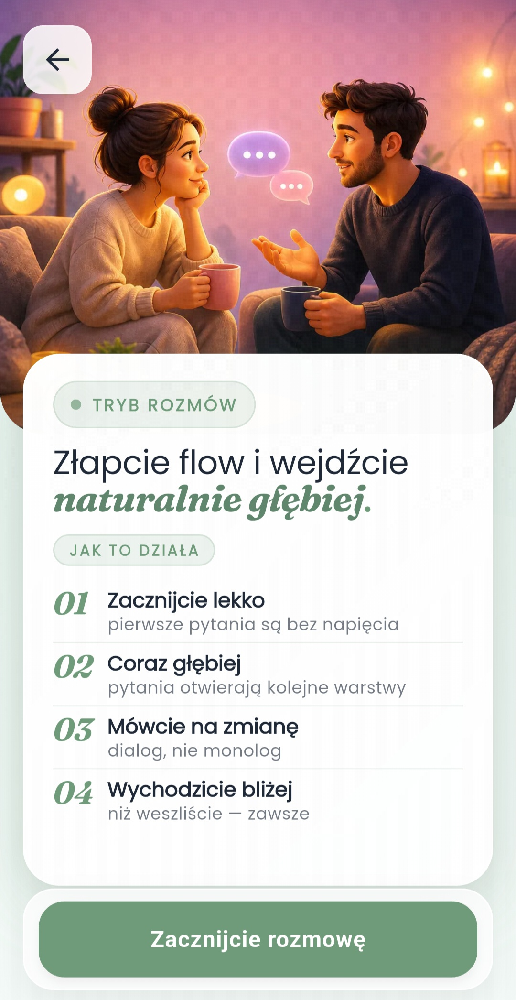
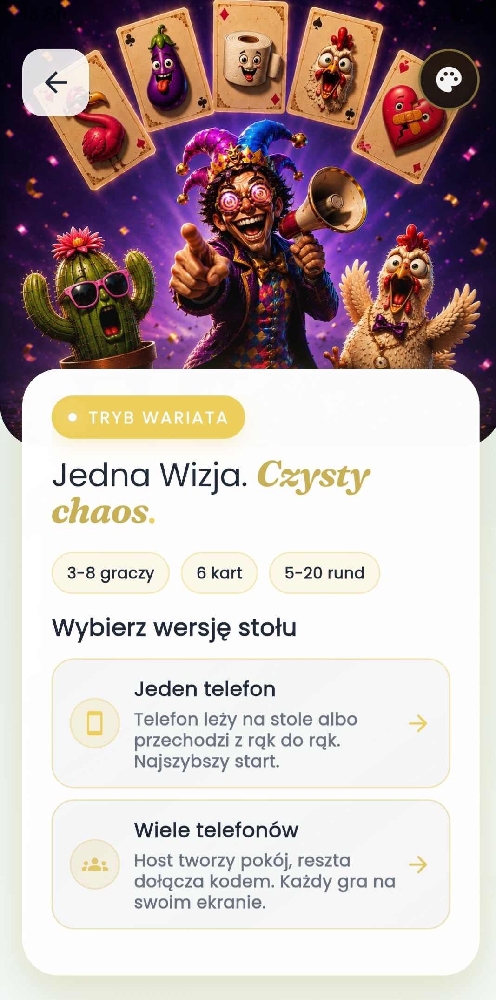
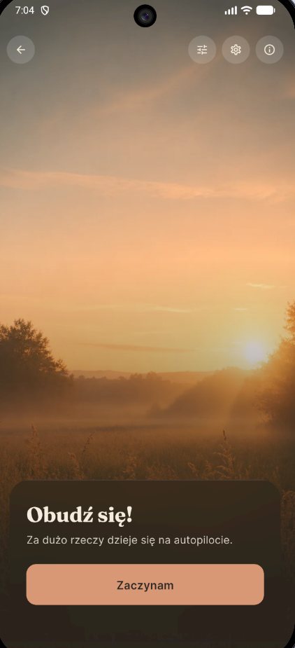
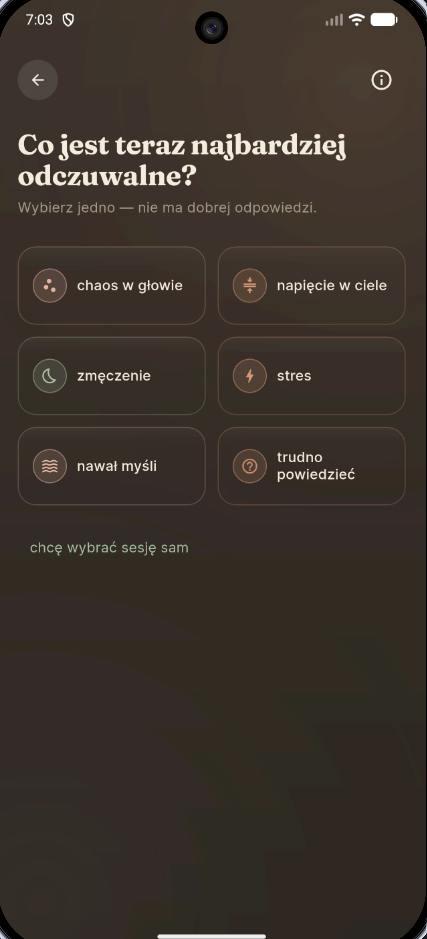
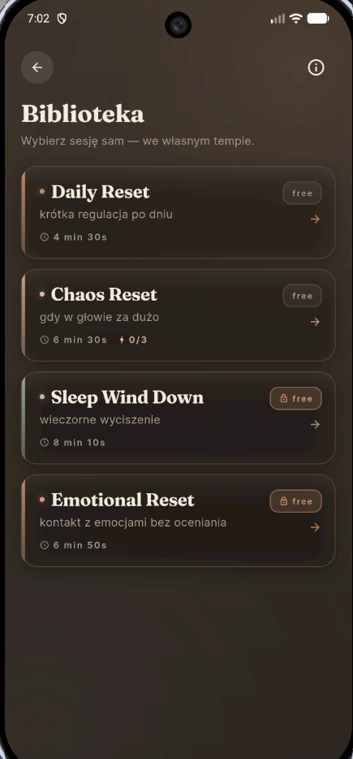

Aplikacja na Androida
36 pytań
Rozmowy, chemia i Karty Wariata w jednej aplikacji.
Wybierz spokojny dialog we dwoje, test chemii albo imprezowy chaos przy jednym telefonie. Aplikacja ustawia klimat, prowadzi tempo i skraca drogę od „co robimy?” do pierwszego pytania.
- Tryby dla par i ekip
- Karty Wariata dla 3-8 osób
- Realne ekrany z aplikacji

Solo, duet i grupa mają osobne wejścia oraz własny klimat.


Bez talii i rekwizytów
telefon wystarczy do rozmowy albo gry
Jeden ekran prowadzi tempo
mniej tłumaczenia, więcej grania
Od randki po domówkę
tryby zmieniają ton razem z wieczorem
O apce
Aplikacja, która nie tylko losuje pytania, ale prowadzi moment
36 pytań działa jak prowadzący przy stole: daje dobry start, zmienia tempo, pilnuje rytmu i pomaga wejść w rozmowę bez niezręcznego szukania tematu.
Rozmowy, chemia i pytania, które naturalnie prowadzą dalej.
Scenariusze prowadzą od lekkiego wejścia do tematów, przy których naprawdę zaczyna się rozmowa.
Karty Wariata to szybka imprezówka typu pass-and-play dla 3-8 osób.
Setup graczy, rundy, reveal odpowiedzi i tabela wyników robią z telefonu prowadzącego całej rozgrywki.
Jedna aplikacja, kilka nastrojów i zero czytania długich zasad.
Wybieracie tryb, podajecie telefon dalej i po chwili trwa już rozmowa albo gra. Bez instrukcji czytanej przez pół stołu.
Przedsmak treści
Tak brzmią pytania, kiedy robi się luźniej
Na pierwszej randce najbardziej boję się, że wyjdzie na jaw...
że mój “spontan” ma 14 zakładek w Notatkach.
Największy red flag przy stole to ktoś, kto...
mówi “ja tylko jedno pytanie” i odpala przesłuchanie.
Mój typ flirtu to...
kontakt wzrokowy, żart i natychmiastowa analiza, czy to było za dużo.
Tryby
Każdy tryb sprzedaje inną energię wieczoru
Nie musisz wiedzieć, czego dokładnie szukasz. Wybierasz nastrój: bliskość, flirt, reset, dopasowanie albo imprezowy chaos.

Klasyka
36 pytań
Sprawdzona ścieżka od lekkiego otwarcia do pytań, które robią miejsce na szczerość.
Dobry pierwszy krok dla nowych osób.

Relacje
Rozmowy i emocje
Lżejsze i poważniejsze scenariusze, kiedy chcecie pogadać bez udawania, że to zwykły small talk.
Bez presji, ale z wyraźnym prowadzeniem.
Napięcie
Chemia
Tryb nastawiony na iskrę, flirt i odważniejsze tempo między dwojgiem ludzi.
Wyraźnie inna energia niż klasyczna rozmowa.
Po czasie
Po latach
Format dla osób, które chcą wrócić do siebie po czasie i znaleźć nowe tematy w znanej relacji.
Spokojniejszy rytm i większy nacisk na bliskość.
Solo
Obudź się
Moduł do zatrzymania się, refleksji i spokojnego resetu nastroju przed dalszą częścią dnia.
Dla momentów, kiedy chcesz pobyć chwilę ze sobą.

Impreza
Karty Wariata
Najmocniejszy tryb w apce: szybkie rundy, wybory, reveal, ranking i chaos meter.
Jeden telefon, głośny stół i szybkie wejście w zasady.
Mocny tryb grupowy
Karty Wariata robią z aplikacji pełnoprawną grę imprezową.
To nie jest lista śmiesznych pytań. Tryb ma setup graczy, prowadzenie rund, wzrost intensywności, wyniki, ranking i autozapis sesji.
3-8
graczy przy jednym telefonie
30-60 min
na pełną sesję
Zero tłumaczenia
bo ekran prowadzi rundę
- setup graczy, długości gry i klimatu
- krótki briefing przed rundą zamiast ściany tekstu
- płynny reveal kart i szybkie ogłaszanie wyniku
- wzrost intensywności przez chaos meter
Na ekranie
Krótki onboarding bez tłumaczenia zasad na głos
Ten widok od razu pokazuje rytm rozgrywki: kolejkę odpowiedzi, głosowanie, punktację i opcjonalne modyfikatory przed startem sesji.
Tryb solo
Obudź się: krótki reset głowy w 3 krokach
Ten moduł pomaga zatrzymać pęd dnia. Zamiast kolejnej listy zadań dostajesz prostą sekwencję: check-in, oddech i domknięcie z jedną intencją na dalszą część dnia.
Jak działa tryb
Spokój bez komplikowania
- Szybki check-in nastroju i poziomu napięcia.
- Prowadzony oddech, który realnie zwalnia tempo.
- Domknięcie sesji konkretną intencją „co dalej”.



Jak to działa
Wchodzicie, wybieracie nastrój i od razu macie pierwszy ruch
Wybierz tryb
Rozmowa, chemia, klasyka albo impreza. Decyzja trwa kilka sekund.
Dopasuj tempo
W grupie ustawiasz graczy, długość sesji i poziom energii. We dwoje po prostu zaczynacie.
Graj bez zgrzytów
Ekrany prowadzą kolejność, autozapis chroni sesję, a tempo nie znika po pierwszej rundzie.
Ekrany aplikacji
Prawdziwe widoki z apki, nie makiety
Każdy ekran mówi trochę innym językiem wizualnym, ale wszystkie mają wspólny cel: szybko ustawić właściwą energię rozmowy albo gry.
Start
Menu główne
Pierwszy ekran od razu rozdziela solo, tryby dla par i sekcję grupową, więc użytkownik od razu wie, gdzie wejść.
- 3 szybkie wejścia do różnych nastrojów
- Duże kafle bez tłumaczenia zasad
- Czytelny podział na solo, duet i ekipę
Gotowe na wieczór
Pobierz 36 pytań i miej pod ręką plan na rozmowę albo imprezę.
Aplikacja sprawdza się wtedy, gdy nie chcecie kolejnej pustej rozmowy ani kolejnej gry, którą trzeba tłumaczyć od zera.
Kontakt
Masz pytanie o aplikację, współpracę albo publikację?
Napisz krótko, czego potrzebujesz. Formularz przygotuje wiadomość do wysłania na adres twórcy aplikacji.
- feedback po testach aplikacji
- współpraca, publikacje i materiały prasowe
- zgłoszenia techniczne oraz pomysły na tryby